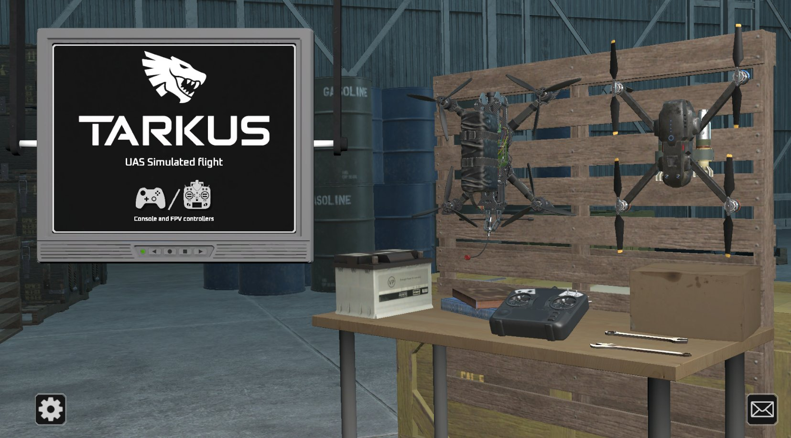
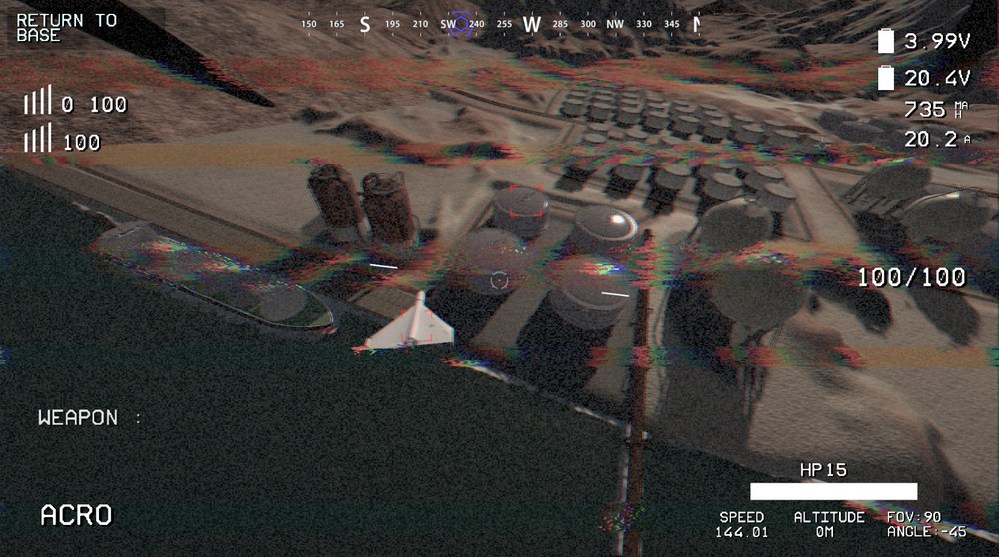

Synthetic Training for the Operational Edge
Purpose-Built.
Operator-Ready.
TARKUS is engineered for front-line conditions: air-gapped architecture for full OPSEC compliance, min-spec hardware compatibility for austere deployment, and a fully configurable instructor console that adapts the training environment in real time. Every session generates structured telemetry — not scores, not statistics — that feeds performance benchmarking, scenario planning, and long-term operator assessment.
01 · Command Console
Dynamic Scenario Control
Real-time injection of weather conditions, hardware fault states, and Electronic Warfare degradation. Instructors shape the training environment without interrupting the session. Supports full EW jamming simulation including signal-to-noise modelling across frequency bands, Fresnel zone diffraction, and variable jammer geometry — replicating vehicle-mounted and fixed-position EW threats at accurate J/S ratios.
02 · Air-Gapped Architecture
Secure Offline Deployment
TARKUS operates with zero network dependency. All data — operator telemetry, scenario libraries, AAR recordings — persists locally. No cloud login, no external authentication, no data egress. Designed from the ground up for classified environments and forward-deployed locations where OPSEC requirements are non-negotiable. Runs on commercial off-the-shelf hardware including min-specification laptops.
03 · Telemetry & AAR
After Action Review Suite
Every training session generates structured telemetry: flight path data, response latency, signal degradation events, engagement decisions. Full 3D forensic replay allows instructor-led post-mission analysis. Performance benchmarks are exportable for integration into wider operator assessment frameworks, supporting the NATO standard reporting cadence expected by UK Army and allied force training commands.
04 · Physics Fidelity
Validated UAS Micro-Physics
The TARKUS physics engine models orientation-dependent drag, propeller disc dynamics, motor torque, gyroscopic precession, and ground effect — validated against real-world UAS empirical data. Terminal velocity, free-fall acceleration, and aerodynamic behaviour match live hardware to within accepted simulation margins. Operators trained in TARKUS transition to live platforms with demonstrably reduced time-to-competency.


Scenario Planning & Data Ingestion
- Drone hardware parameters ingested via OEM specification import
- Geographic and mapping data ingestion for custom synthetic ground-truth
- Configurable network data environments for interoperability exercises
- Scenario library built from real operational patterns; fully instructor-editable
- European OEM partnership pipeline: drone hardware profiles continuously expanded
Deployment Profile
- Min-spec COTS hardware — no proprietary rig required
- UAS controller support: standard radio hardware input
- Instructor and operator stations operate independently
- No internet or cloud dependency at any stage
- DIS / HLA network interoperability (Phase 2 roadmap)
- Configurable for single-operator or networked data environments